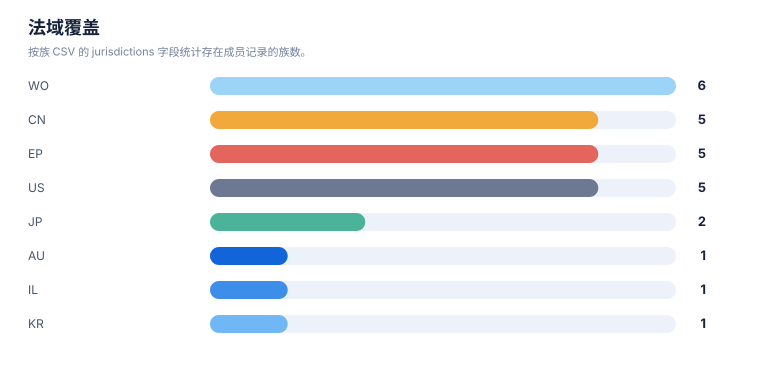
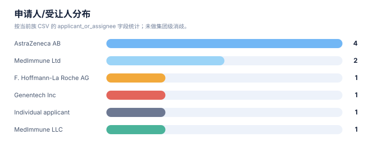

专利族地图报告
案例：durvalumab-pdl1-nsclc · 生成时间：2026-08-07T09:49:32.719627+00:00 · 本报告为研究资料，不构成法律意见。
研究范围
研究对象：Durvalumab
靶点：PD-L1
适应症：non-small cell lung cancer (NSCLC)
目标法域：CN, US
关联法域：WO, EP
截至：2026-08-07
深度：standard_analysis
主要申请人：未提供（详情见执行摘要）
1. 族口径
本报告按输入数据中的 family_id 统计，并保留 family_definition。若同时需要 DOCDB simple family 与 INPADOC extended family，应分别建字段和分别统计，不能混合去重。
2. 专利族总览
| 族 | 族定义 | 代表文献 | 最早优先权 | 申请人 | 法域 | claim 类别 | 状态快照 | 置信度 |
|---|---|---|---|---|---|---|---|---|
| DVL-FAM-001 | DOCDB/simple-family screen; sequence/engineered-antibody branch retained | US9493565B2 | 2009-11-24 | MedImmune Ltd | CN;US;WO;EP | compositionantibodyuse | US public mirror shows active; CN and other national members require official-register review | medium |
| DVL-FAM-002 | DOCDB/simple-family screen; NSCLC use/biomarker branch | US20190256603A1 | 2016-11-11 | C/o Definiens AG;Definiens AG;MedImmune LLC | CN;US;WO;EP;JP | method of treatmentcombinationpatient selection | US application shown abandoned; CN member shown pending on public mirror; family legal state differs by jurisdiction | medium |
| DVL-FAM-006 | DOCDB/simple-family screen; adjacent checkpoint combination family | WO2019165434A1 | 2018-02-26 | F. Hoffmann-La Roche AG;Genentech Inc | CN;US;WO;EP;JP | combinationregimenpathway | WO record shown ceased; national status differs by jurisdiction | medium |
| DVL-FAM-005 | DOCDB/simple-family screen; formulation branch | US20210054079A1 | 2018-04-25 | MedImmune Ltd | US | formulationcomposition | US application shown abandoned on public mirror | medium |
| DVL-FAM-004 | DOCDB/simple-family screen; stage III NSCLC chemoradiation branch | WO2022248478A1 | 2021-05-24 | AstraZeneca AB | CN;US;WO;EP | method of treatmentcombinationregimen | CN117425493A and US20240254235A1 shown published/pending on public mirror; official register review required | medium |
| DVL-FAM-003 | DOCDB/simple-family screen; perioperative NSCLC branch | WO2024213696A1 | 2023-04-14 | AstraZeneca AB | AU;CN;EP;IL;KR;WO | method of treatmentcombinationregimen | WO PCT record shown ceased; AU/CN/EP/KR/IL national or regional members identified on public mirror; live status requires official-register confirmation | medium |
| DVL-FAM-007 | DOCDB/simple-family screen; adjacent NSCLC biomarker family | WO2024234348A1 | 2023-05-17 | Individual applicant | WO | biomarkerdiagnosticpatient selection | WO record shown ceased; not durvalumab-specific in the rapid screen | medium |
统计可视化
打开 FTO 风格统计总览 · 图表由当前案例 CSV/JSON 自动生成。
专利族技术主题分布

统计口径：按 family_id 统计，每族归入一个主技术阶段。
最早优先权年度分布

统计口径：按族级 earliest_priority 的年份统计。
法域覆盖

统计口径：按族 CSV 的 jurisdictions 字段统计存在成员记录的族数。
申请人/受让人分布

统计口径：按当前族 CSV 的 applicant_or_assignee 字段统计；未做集团级消歧。
3. 主题关联图
下图是“研究对象—筛选到的专利族—技术主题”关联图，不把不同 family_id 之间强行画成继承或同族关系。正式族关系应进一步补录 priority/continuity/member 边。
flowchart LR
Q[研究对象/技术方案]
Q --> F1["DVL-FAM-001 · 结构/组成与核心实体"]
Q --> F2["DVL-FAM-002 · 联合治疗/患者分层"]
Q --> F3["DVL-FAM-003 · 治疗用途/联合/给药方案"]
Q --> F4["DVL-FAM-004 · 治疗用途/联合/给药方案"]
Q --> F5["DVL-FAM-005 · 结构/组成与核心实体"]
Q --> F6["DVL-FAM-006 · 治疗用途/联合/给药方案"]
Q --> F7["DVL-FAM-007 · 生物标志物/诊断/患者分层"]
图未渲染时查看原始定义（需要网络加载 Mermaid.js）
flowchart LR Q[研究对象/技术方案] Q --> F1["DVL-FAM-001 · 结构/组成与核心实体"] Q --> F2["DVL-FAM-002 · 联合治疗/患者分层"] Q --> F3["DVL-FAM-003 · 治疗用途/联合/给药方案"] Q --> F4["DVL-FAM-004 · 治疗用途/联合/给药方案"] Q --> F5["DVL-FAM-005 · 结构/组成与核心实体"] Q --> F6["DVL-FAM-006 · 治疗用途/联合/给药方案"] Q --> F7["DVL-FAM-007 · 生物标志物/诊断/患者分层"]
4. 优先权时间泳道数据
| 族 | 最早优先权 | 公开日 | 代表文献 | 后续关系/待补检 |
|---|---|---|---|---|
| DVL-FAM-001 | 2009-11-24 | 2016-11-15 | US9493565B2 | 分案/继续申请/国家阶段需逐项核验 |
| DVL-FAM-002 | 2016-11-11 | 2019-08-22 | US20190256603A1 | 分案/继续申请/国家阶段需逐项核验 |
| DVL-FAM-003 | 2023-04-14 | 2024-10-17 | WO2024213696A1 | 分案/继续申请/国家阶段需逐项核验 |
| DVL-FAM-004 | 2021-05-24 | 2022-12-01 | WO2022248478A1 | 分案/继续申请/国家阶段需逐项核验 |
| DVL-FAM-005 | 2018-04-25 | 2021-02-25 | US20210054079A1 | 分案/继续申请/国家阶段需逐项核验 |
| DVL-FAM-006 | 2018-02-26 | 2019-08-29 | WO2019165434A1 | 分案/继续申请/国家阶段需逐项核验 |
| DVL-FAM-007 | 2023-05-17 | 2024-11-21 | WO2024234348A1 | 分案/继续申请/国家阶段需逐项核验 |
5. 法域矩阵
✓ = 该法域存在成员记录；– = 未见成员记录（不代表该法域一定没有专利，需按范围补检）。
| 族 | AU | CN | EP | IL | JP | KR | US | WO |
|---|---|---|---|---|---|---|---|---|
| DVL-FAM-001 | – | ✓ | ✓ | – | – | – | ✓ | ✓ |
| DVL-FAM-002 | – | ✓ | ✓ | – | ✓ | – | ✓ | ✓ |
| DVL-FAM-003 | ✓ | ✓ | ✓ | ✓ | – | ✓ | – | ✓ |
| DVL-FAM-004 | – | ✓ | ✓ | – | – | – | ✓ | ✓ |
| DVL-FAM-005 | – | – | – | – | – | – | ✓ | – |
| DVL-FAM-006 | – | ✓ | ✓ | – | ✓ | – | ✓ | ✓ |
| DVL-FAM-007 | – | – | – | – | – | – | – | ✓ |
6. 地图解读与限制
- 族数反映当前数据集中的去重结果，不反映商业价值、市场份额或有效专利数量。
official_status是输入快照；没有目标法域官方来源时，必须进入状态复核队列。- 代表文献不能替代族内成员清单；国家阶段、分案和继续申请可能有不同 claim 范围。